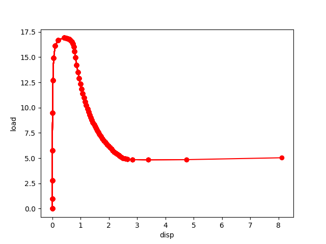

Tutorial: The dissipated energy pathfollowing solver
This example is taken from the paper
E.Borjesson, J.J.C. Remmers, M. Fagerstrom (2022) A generalised path-following solver for robust analysis of material failure, Computational Mechanics https://doi.org/10.1007/s00466-022-02175-w
In section 3.1 a delamination buckling simulation is considered. The input file for this cases can be found in the directory ‘’examples/solver/dissipatedEnergSolver’’ The input file ‘’delam_buckling100.pro’’ contains the input parameters for a simulation with 450 elements (400 finite strain continuum elements and 50 interface elements). The input file ‘’delam_buckling200.pro’’ describes the same problem with 800 continuum and 50 interface elements.
These input files can be executed by typing:
pyfem delam_buckling200.pro
The result load displacement curve will look as follows:
